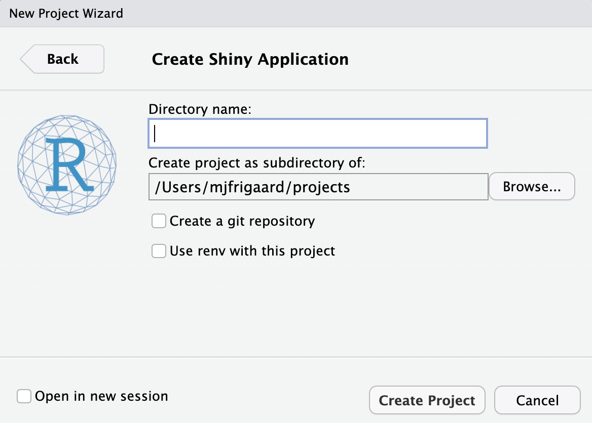
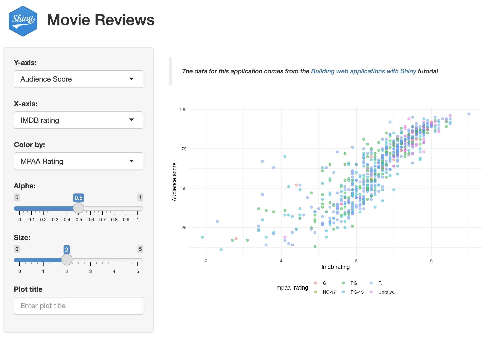

# install.packages('pak')
pak::pak('mjfrigaard/shinypak')2 Shiny
Building and Enhancing Your Shiny Applications
Easily launch the applications with the
install.packages('pak')
library(pak)
pak('mjfrigaard/shinypak')This chapter briefly reviews programming with Shiny’s reactive model and how it differs from regular R programming. Then, I’ll cover some of the unique behaviors of Shiny app projects (and why you might consider adopting them if you haven’t already).

Let’s get started!
TLDR
A basic Shiny project has two files:
An app.R and .Rproj file:
shiny-app/
├── app.R
└── shiny-app.RprojA fully developed Shiny project can have the following:
- An
R/folder for additional scripts (i.e., modules, helper & utility functions) that is automatically sourced when the application runs
- The only exception to this is a global.R file, which is run first
A
www/folder for external resources (images, styling, etc.) that is automatically served when the application runsAn optional
DESCRIPTIONfile that controls deployment behaviors (i.e.,DisplayMode)Data files
An optional
README.mdfile for documentation
shiny-app/
├── DESCRIPTION
├── R/
│ ├── module.R
│ ├── helper.R
│ └── utils.R
├── README.md
├── app.R
├── data.RData
├── shiny-app.Rproj
└── www/
└── shiny.png*Both R/ and www/ are automatically loaded when the app launches.
2.1 Shiny apps
Reactivity is the underlying process that allows Shiny apps to update and respond to user interactions automatically. Developing Shiny apps involves harnessing the connection between inputs, reactivity, and outputs to control and predict the application’s behavior.
Shiny programming differs from regular R programming in several key aspects:
An Event-driven UI: Shiny apps require developers to design and develop a user interface (UI). User experience (UX) design is an entirely separate field, but as Shiny developers, we need to know enough to allow users to interact with and navigate our apps. The UI also captures each ‘event,’ meaning that the user’s actions (such as button clicks or input changes) trigger the application’s inputs, updates, or outputs.
- Regular R programming often involves executing predefined steps or functions without direct interaction or responses to user events.
A Reactive Server: In Shiny, the application’s behavior is determined by the dependencies between reactive inputs (i.e., the
inputIds), reactive values, and outputs (i.e., theoutputIds), allowing for automatic updates and propagation of changes throughout the application.- In standard R programming, we typically define a series of sequential steps (i.e., functions) that operate on data to generate output to the console or a typesetting system for technical and scientific publications (model results, graphs, tables, etc.) without accounting for reactivity or downstream changes.
Learning reactivity can be challenging when you start, but fortunately, there are excellent tutorials and articles to help you along the way!
Accessing applications
I’ve created the shinypak R package In an effort to make each section accessible and easy to follow:
Install shinypak using pak (or remotes):
Review the chapters in each section with list_apps()
library(shinypak)
list_apps(regex = '^02')
## # A tibble: 3 × 2
## branch last_updated
## <chr> <dttm>
## 1 02.1_shiny-app 2024-01-17 12:35:35
## 2 02.2_movies-app 2024-01-17 12:37:19
## 3 02.3_proj-app 2024-01-17 12:39:28Launch the app:
launch(app = "02.3_proj-app")Download the app:
get_app(app = "02.3_proj-app")Launch app with the shinypak package:
launch('02.1_shiny-app')If you’re creating a new application using the New Project Wizard, you’ll see the following:

Select the location of your Shiny app project, then pick a name and decide whether you want to use Git or renv (I’ll be using Git).

After clicking Create Project, a new session will open with your project files.
Note that the only items in the new Shiny app project are app.R and the moviesApp.Rproj file.
moviesApp/
├── app.R
└── moviesApp.Rproj
1 directory, 2 files2.1.1 Boilerplate app.R
app.R initially contains a boilerplate application, which we can launch by clicking on the Run App button:


The boilerplate ‘Old Faith Geyser Data’ app is a perfect example of what Shiny can do with a single app.R file, but we’ll want to exchange this code for a slightly more advanced application (because most Shiny apps grow beyond an app.R file).
2.2 Movie review data app
Most Shiny applications move beyond a single app.R file. Knowing how to store any utility functions, data, documentation, and metadata will set you up for success as you transition to storing your app in an R package.
Launch app with the shinypak package:
launch('02.2_movies-app')I’m going to work through an example of some intermediate/advanced Shiny app features using the application from the Building Web Applications with Shiny course. This app is a great use case for the following reasons:
It has multiple input types that are collected in the UI
The graph output can be converted to a utility function
The app loads an external data file when it’s launched
The code is accessible (and comes from a trusted source)
2.2.1 App
The code below replaces the boilerplate ‘Old Faith Geyser Data’ app in app.R:
2.2.1.1 app.R
show/hide movie review Shiny app
ui <- shiny::fluidPage(
theme = shinythemes::shinytheme("spacelab"),
shiny::sidebarLayout(
shiny::sidebarPanel(
shiny::selectInput(
inputId = "y",
label = "Y-axis:",
choices = c(
"IMDB rating" = "imdb_rating",
"IMDB number of votes" = "imdb_num_votes",
"Critics Score" = "critics_score",
"Audience Score" = "audience_score",
"Runtime" = "runtime"
),
selected = "audience_score"
),
shiny::selectInput(
inputId = "x",
label = "X-axis:",
choices = c(
"IMDB rating" = "imdb_rating",
"IMDB number of votes" = "imdb_num_votes",
"Critics Score" = "critics_score",
"Audience Score" = "audience_score",
"Runtime" = "runtime"
),
selected = "critics_score"
),
shiny::selectInput(
inputId = "z",
label = "Color by:",
choices = c(
"Title Type" = "title_type",
"Genre" = "genre",
"MPAA Rating" = "mpaa_rating",
"Critics Rating" = "critics_rating",
"Audience Rating" = "audience_rating"
),
selected = "mpaa_rating"
),
shiny::sliderInput(
inputId = "alpha",
label = "Alpha:",
min = 0, max = 1,
value = 0.4
),
shiny::sliderInput(
inputId = "size",
label = "Size:",
min = 0, max = 5,
value = 3
),
shiny::textInput(
inputId = "plot_title",
label = "Plot title",
placeholder = "Enter text to be used as plot title"
),
shiny::actionButton(
inputId = "update_plot_title",
label = "Update plot title"
)
),
shiny::mainPanel(
shiny::br(),
shiny::p(
"These data were obtained from",
shiny::a("IMBD", href = "http://www.imbd.com/"), "and",
shiny::a("Rotten Tomatoes", href = "https://www.rottentomatoes.com/"), "."
),
shiny::p(
"The data represent",
nrow(movies),
"randomly sampled movies released between 1972 to 2014 in the United States."
),
shiny::plotOutput(outputId = "scatterplot"),
shiny::hr(),
shiny::p(shiny::em(
"The code for this Shiny application comes from",
shiny::a("Building Web Applications with shiny",
href = "https://rstudio-education.github.io/shiny-course/"
)
))
)
)
)
server <- function(input, output, session) {
new_plot_title <- shiny::reactive({
tools::toTitleCase(input$plot_title)
}) |>
shiny::bindEvent(input$update_plot_title,
ignoreNULL = FALSE,
ignoreInit = FALSE
)
output$scatterplot <- shiny::renderPlot({
scatter_plot(
df = movies,
x_var = input$x,
y_var = input$y,
col_var = input$z,
alpha_var = input$alpha,
size_var = input$size
) +
ggplot2::labs(title = new_plot_title()) +
ggplot2::theme_minimal() +
ggplot2::theme(legend.position = "bottom")
})
}
shiny::shinyApp(ui = ui, server = server)2.2.2 Additional files
I’ve added the scatter_plot() utility function in a new utils.R file:
2.2.2.1 utils.R
show/hide scatter_plot()
scatter_plot <- function(df, x_var, y_var, col_var, alpha_var, size_var) {
ggplot2::ggplot(data = df,
ggplot2::aes(x = .data[[x_var]],
y = .data[[y_var]],
color = .data[[col_var]])) +
ggplot2::geom_point(alpha = alpha_var, size = size_var)
}2.2.2.2 movies.RData
The movies.RData dataset contains reviews from IMDB and Rotten Tomatoes
You can download these data here
2.2.3 Updated movies app project contents
The moviesApp project now contains the following files:
moviesApp/
├── app.R
├── movies.RData
├── moviesApp.Rproj
└── utils.R
2 directories, 4 filesTo run the movies app, we need to load the data and source the utils.R file by adding the code below to the top of the app.R file:
After installing the packages below, add a comment (#) in front of these lines.
I’ve placed the header below in the top of the app.R file:
# install ------------------------------------
# after installing, comment this out
pkgs <- c("shiny", "shinythemes", "stringr", "ggplot2", "rlang")
install.packages(pkgs, verbose = FALSE)
# packages ------------------------------------
library(shiny)
library(shinythemes)
library(stringr)
library(ggplot2)
library(rlang)
# data -----------------------------------------
load("movies.RData")
# utils ----------------------------------------
source("utils.R")- 1
-
Comment out these lines after installing
pkgs
Clicking on Run App displays the movie review app:

movies app
2.3 Project folders
Now that we have a slightly more complex application in app.R, I’ll add a few project folders we can include in our project that have unique built-in behaviors. These folders will help organize your files and make additional resources available to your app.
Launch app with the shinypak package:
launch('02.3_proj-app')2.3.1 R/
If your Shiny app relies on utility or helper functions (outside the app.R file), you can place this code in an R/ folder. Any .R files in the R/ folder will be automatically sourced when the application is run.
Place
utils.R in R/ folder
I’ve moved the utils.R file into the R/ folder in moviesApp:
moviesApp/
└── R/
└── utils.R
1 directory, 1 fileThe function that makes this process (i.e., sourcing any .R files in an R/ folder) possible is loadSupport(). We’ll return to this function in a later chapter, because the R/ folder has a similar behavior (but different function) in R packages.1
2.3.2 www/
When you run a Shiny application, any static files (i.e., resources) under a www/ directory will automatically be made available within the application. This folder stores images, CSS or JavaScript files, and other static resources.
Create
www/ folder and download image
I’ve downloaded the Shiny logo (shiny.png) and stored it in the www/ folder.
{kind=link}
moviesApp/
└── www/
└── shiny.png
1 directory, 1 fileIn the section below, we’ll reference shiny.png directly in the UI.
Following the conventional folder structure will also help set you up for success when/if you decide to convert it into an app-package.
2.4 Project files
2.4.1 README.md
Including a README.md file in your root folder is a good practice for any project. README.md should contain relevant documentation for running app.R.
Create
README.md
I’ve included the content below in the README.md file
# movies app
The original code and data for this Shiny app comes from the [Building Web Applications with Shiny](https://rstudio-education.github.io/shiny-course/) course. It's been converted to use [shiny modules](https://shiny.posit.co/r/articles/improve/modules/).
View the code for this application in the [`moviesApp` branches](https://github.com/mjfrigaard/moviesApp/branches/all).2.4.2 DESCRIPTION
DESCRIPTION files play an essential role in R packages, but they are also helpful in Shiny projects if I want to deploy the app in showcase mode.
Create
DESCRIPTION
I’ve included the content below in DESCRIPTION:
Type: shiny
Title: movies app
Author: John Smith
DisplayMode: Showcase
It’s always a good idea to leave at least one <empty final line> in your DESCRIPTION file.
After adding README.md and a DESCRIPTION file (listing DisplayMode: Showcase), the movies app will display the code and documentation when the app launches.2
2.5 Project code
The following two items are considered best practices because they make your app more scalable by converting app.R into functions.
2.5.1 Modules
Shiny modules are a ‘pair of UI and server functions’ designed to compartmentalize input and output IDs into distinct namespaces,
‘…a namespace is to an ID as a directory is to a file…’ -
shiny::NS()help file.
Module UI functions typically wrap the layout, input, and output functions in shiny::tagList(). Module server functions typically contain the ‘backend’ code in a Shiny server function. Both the UI and server module functions are linked by an id argument, which is created using shiny::NS() (namespace) in the UI function and called in the server function with shiny::moduleServer().
2.5.1.1 Variable inputs module
mod_var_input_ui() creates a dedicated namespace for the inputIds with shiny::NS():
2.5.1.1.1 R/mod_var_input.R
show/hide mod_var_input_ui()
mod_var_input_ui <- function(id) {
ns <- shiny::NS(id)
shiny::tagList(
shiny::selectInput(
inputId = ns("y"),
label = "Y-axis:",
choices = c(
"IMDB rating" = "imdb_rating",
"IMDB number of votes" = "imdb_num_votes",
"Critics Score" = "critics_score",
"Audience Score" = "audience_score",
"Runtime" = "runtime"
),
selected = "audience_score"
),
shiny::selectInput(
inputId = ns("x"),
label = "X-axis:",
choices = c(
"IMDB rating" = "imdb_rating",
"IMDB number of votes" = "imdb_num_votes",
"Critics Score" = "critics_score",
"Audience Score" = "audience_score",
"Runtime" = "runtime"
),
selected = "imdb_rating"
),
shiny::selectInput(
inputId = ns("z"),
label = "Color by:",
choices = c(
"Title Type" = "title_type",
"Genre" = "genre",
"MPAA Rating" = "mpaa_rating",
"Critics Rating" = "critics_rating",
"Audience Rating" = "audience_rating"
),
selected = "mpaa_rating"
),
shiny::sliderInput(
inputId = ns("alpha"),
label = "Alpha:",
min = 0, max = 1, step = 0.1,
value = 0.5
),
shiny::sliderInput(
inputId = ns("size"),
label = "Size:",
min = 0, max = 5,
value = 2
),
shiny::textInput(
inputId = ns("plot_title"),
label = "Plot title",
placeholder = "Enter plot title"
)
)
}- 1
-
yaxis numeric variable - 2
-
xaxis numeric variable - 3
-
zaxis categorical variable
- 4
-
alphanumeric value for points
- 5
-
sizenumeric value for size
- 6
-
plot_titletext
mod_var_input_server() returns these values in a reactive list with shiny::reactive():
show/hide mod_var_input_server()
mod_var_input_server <- function(id) {
shiny::moduleServer(id, function(input, output, session) {
return(
reactive({
list(
"y" = input$y,
"x" = input$x,
"z" = input$z,
"alpha" = input$alpha,
"size" = input$size,
"plot_title" = input$plot_title
)
})
)
})
}- 1
-
yaxis numeric variable - 2
-
xaxis numeric variable - 3
-
zaxis categorical variable
- 4
-
alphanumeric value for points
- 5
-
sizenumeric value for size
- 6
-
plot_titletext
2.5.1.2 Scatter-plot display module
mod_scatter_display_ui() creates a dedicated namespace for the plot outputId (as "scatterplot"), along with some help text:
2.5.1.2.1 R/mod_scatter_display.R
show/hide mod_scatter_display_ui()
mod_scatter_display_ui <- function(id) {
ns <- shiny::NS(id)
shiny::tagList(
shiny::tags$br(),
shiny::tags$blockquote(
shiny::tags$em(
shiny::tags$h6("The data for this application comes from the ",
shiny::tags$a("Building web applications with Shiny",
href = "https://rstudio-education.github.io/shiny-course/"),
"tutorial"))
),
shiny::plotOutput(outputId = ns("scatterplot"))
)
}- 1
-
Namespaced module
idfor plot in UI
The code to render the output$scatterplot is contained in the nested call to shiny::moduleServer() in mod_scatter_display_server():
After 1) loading the movies data, 2) assembling the returned values from mod_var_input_server(), and creating the input() reactive, 3) the scatter_plot() utility function creates the plot object and adds the plot_title() and theme:
show/hide mod_scatter_display_server()
mod_scatter_display_server <- function(id, var_inputs) {
shiny::moduleServer(id, function(input, output, session) {
load("movies.RData")
inputs <- shiny::reactive({
plot_title <- tools::toTitleCase(var_inputs()$plot_title)
list(
x = var_inputs()$x,
y = var_inputs()$y,
z = var_inputs()$z,
alpha = var_inputs()$alpha,
size = var_inputs()$size,
plot_title = plot_title
)
})
output$scatterplot <- shiny::renderPlot({
plot <- scatter_plot(
df = movies,
x_var = inputs()$x,
y_var = inputs()$y,
col_var = inputs()$z,
alpha_var = inputs()$alpha,
size_var = inputs()$size
)
plot +
ggplot2::labs(
title = inputs()$plot_title,
x = stringr::str_replace_all(
tools::toTitleCase(
inputs()$x),
"_", " "),
y = stringr::str_replace_all(
tools::toTitleCase(
inputs()$y),
"_", " ")
) +
ggplot2::theme_minimal() +
ggplot2::theme(legend.position = "bottom")
})
})
}- 1
-
loading the
moviesdata - 2
-
assembling the returned values from
mod_var_input_server(), and creating theinput()reactive - 3
-
scatter_plot()utility function creates theplotobject - 4
-
adds the
plot_title() - 5
-
add
themeto layers
Both UI and server module functions are combined into a single .R file, and all modules are placed in the R/ folder so they are sourced when the application is run.
R/
├── mod_scatter_display.R
├── mod_var_input.R
└── utils.R2.5.2 Standalone app function
Both module functions are combined in the ui and server arguments of shiny::shinyApp(). The id arguments ("vars" and "plot") connect the UI functions to their server counterparts, and the output from mod_var_input_server() is the var_inputs argument in mod_scatter_display_server().
The call to shiny::shinyApp() is wrapped in the movies_app() function and placed in app.R.
2.5.2.0.1 app.R
show/hide movies_app() in app.R
# install ------------------------------------
# after installing, comment this out
pkgs <- c("shiny", "shinythemes", "stringr", "ggplot2", "rlang")
install.packages(pkgs, verbose = FALSE)
# packages ------------------------------------
library(shiny)
library(shinythemes)
library(stringr)
library(ggplot2)
library(rlang)
movies_app <- function() {
shiny::shinyApp(
ui = shiny::fluidPage(
shiny::titlePanel(
shiny::div(
shiny::img(
src = "shiny.png",
height = 60,
width = 55,
style = "margin:10px 10px"
),
"Movies Reviews"
)
),
shiny::sidebarLayout(
shiny::sidebarPanel(
mod_var_input_ui("vars")
),
shiny::mainPanel(
mod_scatter_display_ui("plot")
)
)
),
server = function(input, output, session) {
selected_vars <- mod_var_input_server("vars")
mod_scatter_display_server("plot", var_inputs = selected_vars)
}
)
}
movies_app()- 1
- Header (comment this out after the packages are installed)
- 2
-
Load packages
- 3
- Variable input UI module
- 4
- Graph display UI module
- 5
- Variable input server module
- 6
- Graph display server module
Now, I can run the app with movies_app().

The deployed files of moviesApp are below:
moviesApp/ # 02.3_proj-app branch
├── DESCRIPTION
├── R/
│ ├── mod_scatter_display.R
│ ├── mod_var_input.R
│ └── utils.R
├── README.md
├── app.R
├── movies.RData
├── moviesApp.Rproj
├── rsconnect/
│ └── shinyapps.io/
│ └── user/
│ └── moviesApp.dcf
└── www/
└── shiny.png
6 directories, 10 filesThe rsconnect/ folder has been removed from the 02.3_proj-app branch.
2.6 Additional features
Below are two additional ‘optional’ features that can be included with your Shiny application (I consider these ‘optional’ because they’re use depends on the specific needs and environment for each application).
2.6.1 Global variables/functions with global.R
Placing a global.R file in your root folder (or in the R/ directory) causes this file to be sourced only once when the Shiny app launches, rather than each time a new user connects to the app. global.R is commonly used for initializing variables, loading libraries, loading large data sets and/or performing initial calculations.
Using
global.R
I could place the header from app.R in global.R to ensure these packages are loaded before the application launches:
show/hide contents of R/global.R
# packages ------------------------------------
library(shiny)
library(shinythemes)
library(stringr)
library(ggplot2)
library(rlang)global.R can be placed in the R/ folder
R/
├── global.R
├── mod_scatter_display.R
├── mod_var_input.R
└── utils.R
1 directory, 4 filesOr in the project root folder
├── DESCRIPTION
├── R
│ ├── mod_scatter_display.R
│ ├── mod_var_input.R
│ └── utils.R
├── README.md
├── app.R
├── global.R
├── man
├── movies.RData
├── moviesApp.Rproj
└── www
└── shiny.png
4 directories, 10 filesIn both locations, it will be sourced before launching the application.
global.R can be used to maintain efficiency and consistency across application sessions.
2.6.2 Project dependencies with renv
If you use renv, keep track of your dependencies by regularly running renv::status() and renv::snapshot().
Using
renv
Start by initiating renv with renv::init(), then run renv::status() to check which packages have been added to the lockfile:
renv::status()show/hide example renv::status() output
The following package(s) are in an inconsistent state:
package installed recorded used
colorspace y n y
fansi y n y
farver y n y
ggplot2 y n y
gtable y n y
isoband y n y
labeling y n y
lattice y n y
MASS y n y
Matrix y n y
mgcv y n y
munsell y n y
nlme y n y
pillar y n y
pkgconfig y n y
RColorBrewer y n y
scales y n y
shinythemes y n y
tibble y n y
utf8 y n y
vctrs y n y
viridisLite y n y Take a ‘snapshot’ to capture the current package dependencies:
renv::snapshot()show/hide example renv::snapshot() output
The following package(s) will be updated in the lockfile:
# CRAN --------------------------------------------------
- lattice [* -> 0.21-8]
- MASS [* -> 7.3-60]
- Matrix [* -> 1.5-3]
- mgcv [* -> 1.8-42]
- nlme [* -> 3.1-162]
- vctrs [* -> 0.6.3]
# RSPM --------------------------------------------------
- colorspace [* -> 2.1-0]
- fansi [* -> 1.0.4]
- farver [* -> 2.1.1]
- ggplot2 [* -> 3.4.2]
- gtable [* -> 0.3.3]
- isoband [* -> 0.2.7]
- labeling [* -> 0.4.2]
- munsell [* -> 0.5.0]
- pillar [* -> 1.9.0]
- pkgconfig [* -> 2.0.3]
- RColorBrewer [* -> 1.1-3]
- scales [* -> 1.2.1]
- shinythemes [* -> 1.2.0]
- tibble [* -> 3.2.1]
- utf8 [* -> 1.2.3]
- viridisLite [* -> 0.4.2]
Do you want to proceed? [Y/n]: y
- Lockfile written to '~/path/to/moviesApp/renv.lock'.2.7 Recap
This chapter has covered some differences between developing Shiny apps and regular R programming, creating new Shiny projects in Posit Workbench, and some practices to adopt that can make the transition to app-packages a little easier. The code used in this chapter is stored in the moviesApp repository.
Recap
Placing utility or helper files in an
R/folder removes the need to callsource()inapp.R.Images, CSS, JavaScript, and other static resources can be stored in
www/and Shiny will serve these files when the application is run.README.mdfiles can document the application’s description, purpose, requirements, etc.DESCRIPTIONfiles provide metadata and include fields that affect application deployment (i.e.,DisplayMode: Showcase)Converting the application code into functions (modules and standalone app functions) creates a ‘division of labor’ for each component, which makes it easier to think about and work on them independently.
Finally, if you’re using
renv, runrenv::status()andrenv::snapshot()to manage dependencies
In the next chapter, I’ll cover what makes a package a package, and some do’s and don’ts when converting a developed Shiny application into an R package.
Shiny introduced these features in version 1.3.2.9001, and you can read more about them in the section titled, ‘The
R/directory’ in App formats and launching apps↩︎